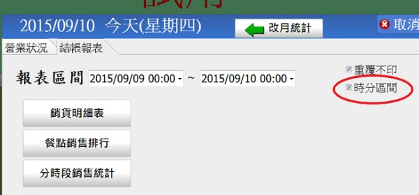
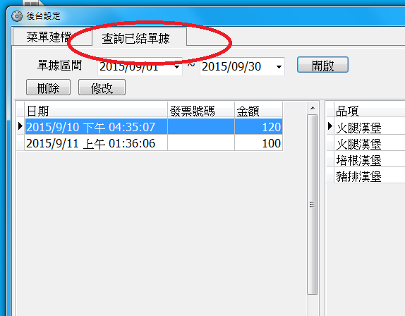
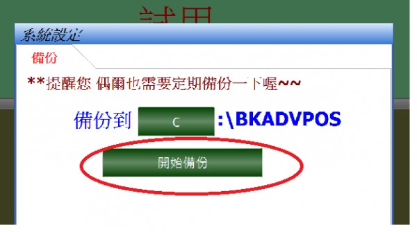
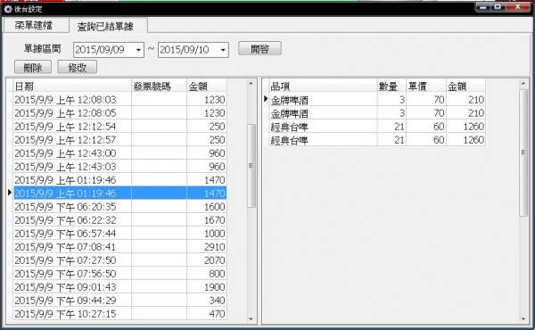
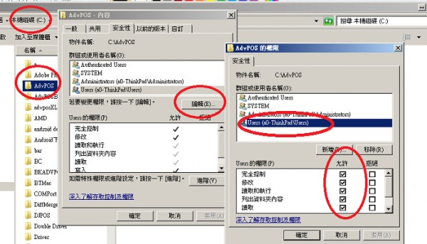
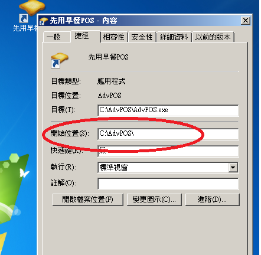

晚上11點~凌晨2點，點餐數量會變成兩筆...
4 個回答
您好
1."數量"變成兩筆 是指甚麼的數量?
2.是哪張報表發現 "數量會變成兩筆的情況"
如果是跨日營業 報表設置 "時分區間"

3.在後台設定->查詢已結單據 查看原始資料是否與您的報表一至?

4.承上 如果原始資料和報表不一至
請提供資料檔做追查

將備份壓縮檔 寄到 advposys@gmail.com
並提供 是哪天的資料 和單號有變成兩筆的情況?
您好 備分檔案已發給您，再請您看看。
數量會變兩筆，但金額無誤。

您好
沒有收到您的檔案 您是寄到那個信箱？
請寄到advposys@gmail.com
或提供您的信箱 站長先寄給您 您在回寄檔案
您好
已經收到您的檔案 站長推測很有可能是您登入windows的使用者權限
太小 導致某些刪除指令無法順利執行
請做如下設置看看 將C:\advpos 目錄的控制權限 針對登入使用者 改成完全控制

也有可能您桌面上的捷徑工作目錄設置有誤
開始位置應該是 c:\ADVPOS的執行路徑

請檢察如上設置 然後再觀察看看
如果還是不行 請在留言給站長知道